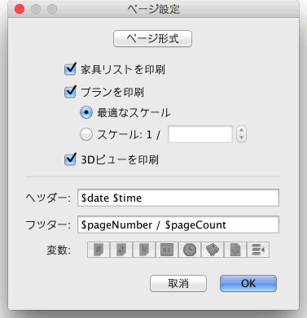
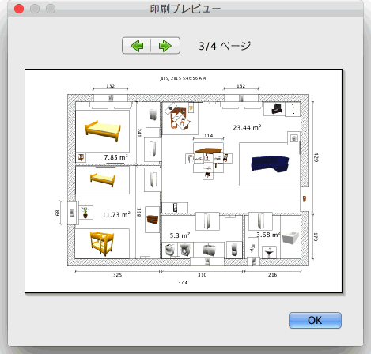

間取りを印刷するには、 ファイル > 印刷… を選択して下さい
このメニューはプリンタ・印刷されたページ番号・印刷品質...を選択できるシステムの印刷ダイヤログボックス
を表示します。
既定で、Sweet Home 3Dの用紙サイズ、余白および方向を使用して現在の間取りプラン、家具リスト、
および3Dビューを印刷します。
もしこれらのパラメーターを変更する場合は、 ファイル > ページ設定...を選択して下さい。

ページ設定画面の ページ形式 ボタンをクリックして用紙サイズと方向を変更することができます。
また、間取りの家具リスト・プランおよび3Dビューを印刷するかどうかを
選択することができます。最適な用紙に合わせるため自動的に計算したプランのスケールを使用しない場合は、 スケール 領域で他のスケール
を選択することも可能です。
また、選択されて各印刷したページに表示されているヘッダーおよび / またはフッターを選択することも可能です。 ヘッダー および フッター
の文字の領域は印刷時に
その値に置き換えられるか、更には若干の変数および自由な文字を受け入れます。 現時点で利用できる7つの変数は以下にあります:
- ページ番号に関しては $pageNumber
- 全体のページ数に関しては $pageCount
- プランのスケールに関しては(自動的に計算された、または スケール 領域に入力したもの) $planScale
- 印刷を行う日付に関しては $date
- 印刷を行う時間に関しては $time
- 間取りの名前に関しては $name
- 間取りファイルのファイル・パスに関しては $file
変数の正確な名前を入力し回避するには、 ヘッダー および フッター の文字領域の下に表示される 変数
のボタンを使用して下さい。$ の変数に対して保留にされる場合、
$$
コードを使用して $ を印刷するべきです。 間取りを印刷する前にメニューから ファイル > 印刷プレビュー... を選択することで、ページ設定を
プレビュー画面で確認できます。

印刷する間取りを印刷プレビュー画面で1ページずつ確認できます。次のプレビューページを見る場合、画面上部の矢印を
クリックまたはキーボードの矢印キーを押して下さい。 |